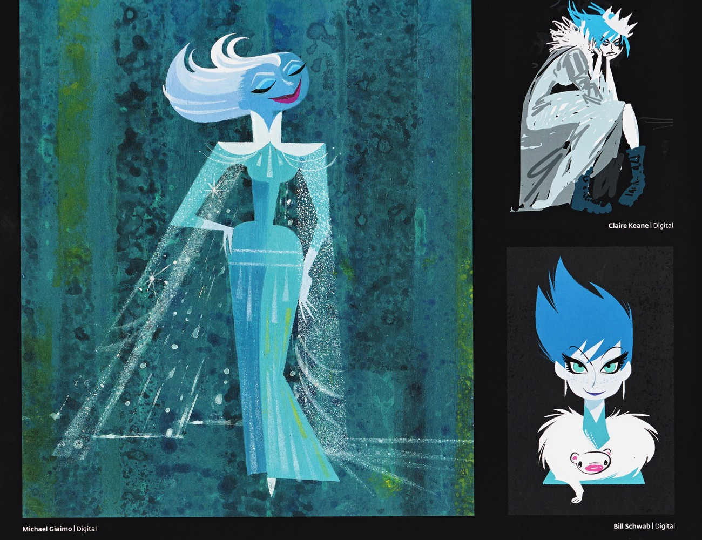

📖 设定集 · F1设定集
F1 图版 · 雪后与对峙
F1 官方设定集图版 · p128–p137
5
本卷页数
🎨
设定集
中/英
双语
🖼️ F1 官方设定集 · 原书图版
F1 图版 · 雪后与对峙
《The Art of Frozen》（Charles Solomon, Chronicle Books 2013） p128–p137
2
图版
p128–p137
原书页码
原书
扫描原图
笔记
逐页图注
👑 「The Snow Queen」章节与最终对峙段落的剩余页：艾莎雪后定妆概念、与汉斯对峙及真爱解冻相关的设计与分镜页。
👸 The Snow Queen · 最终对峙（p128–p137）

Elsa 雪后风格化概念图
本页是 Elsa 雪后的风格化概念合集：Michael Giaimo 以扁平青白块面与后掠白发、长斗篷给出图形化诠释；Claire Keane 画出两种方向——蜷缩阴郁的灰袍尖发加冕者，与自信的亮蓝尖发白毛领雪人胸针形象；Bill Schwab 则给出短亮蓝尖发、戏剧眼线与雪人胸针的自信造型。三种方向共同奠定了雪后视觉（F1设定集原页）

冰雪宫殿场景与角色互动概念
本页为冰雪宫殿段落的概念图集：Bill Schwab 画 Anna（绿裙红辫）与雪后 Elsa（青袍长斗篷后掠白发）面对面似在交谈；Claire Keane 画出 Anna（蓝冬裙）对抗被极度拉长、高耸、戴冠乱白发的 Elsa 以压迫姿态俯身的戏剧性构图；Victoria Ying 给出宫殿大阶梯群像（Anna、Kri（F1设定集原页）
💡 图注说明
本页全部图版为《The Art of Frozen》（Charles Solomon, Chronicle Books 2013）原书扫描（原图复制，未压缩），图注（中文标题 + 要点首句）逐页取自官方设定集中文笔记，点击图片可查看原尺寸扫描。
📌 本页要点
你正在阅读《设定集》卷的「F1 图版 · 雪后与对峙」。本页由电影正典、官方设定集与官方小说综合梳理，可作为该主题的速查入口；右侧目录可快速跳转到本页各小节。